Python · Rust · Remote sensing and mapping
pyGeoMapper
Python and Rust workflows for geologic mapping, 3D structural reconstruction, and surface-change analysis from satellite imagery and elevation models.
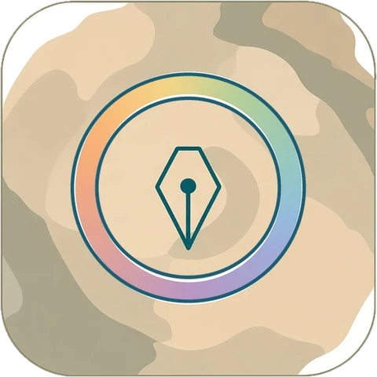
Overview
Field geology connects maps and structures in three spatial dimensions with change through time. pyGeoMapper brings these 3+1D perspectives into a Python workflow with a Rust core: supervised geologic mapping from terrain features and Google AlphaEarth embeddings, cross-sections and browser-viewable 3D structural models, and land-surface change analysis. It combines multiscale terrain analysis through pyTopoComplexity with DEM differencing, spectral indices, InSAR, and optical feature tracking to support interpretation of landslides, earthflows, earthquakes, glaciers, fires, and floods.
The package is under active development. Its methods are experimental and not fully validated; results require geological interpretation and independent checks.
Data types
pyGeoMapper can read, analyze, and visualize:
- Elevation: DEMs and lidar (Copernicus GLO-30, USGS 3DEP lidar); terrain derivatives, CWT complexity, and DEM of Difference.
- Optical imagery: multispectral Sentinel-2 and Landsat, and NAIP aerial RGB; spectral indices (NDVI, NBR, NDWI, BSI, clay and iron ratios), index change, and optical feature-tracking velocity.
- Satellite embeddings: 64-band Google AlphaEarth annual embeddings for classification and embedding change.
- InSAR: Sentinel-1 LiCSAR displacement, offsets, and wrapped phase; UAVSAR unwrapped phase to line-of-sight displacement; Okada fault models.
- Ice velocity: NASA ITS_LIVE velocity grids and speed change.
- Geology: map polygons as training and validation labels, bed attitudes (strike/dip), and fault traces for cross-sections and 3D block models.
Landscape features and geologic mapping
Supervised machine learning uses geomorphic surface features and surface-geology constraints to map geologic units, which are reconstructed as cross-sections and 3D structural models.
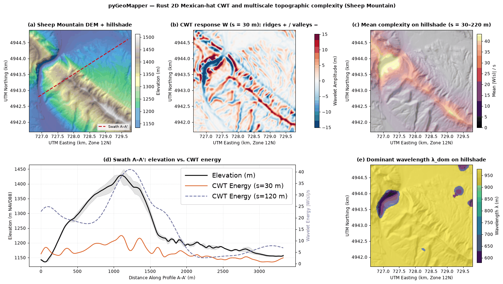
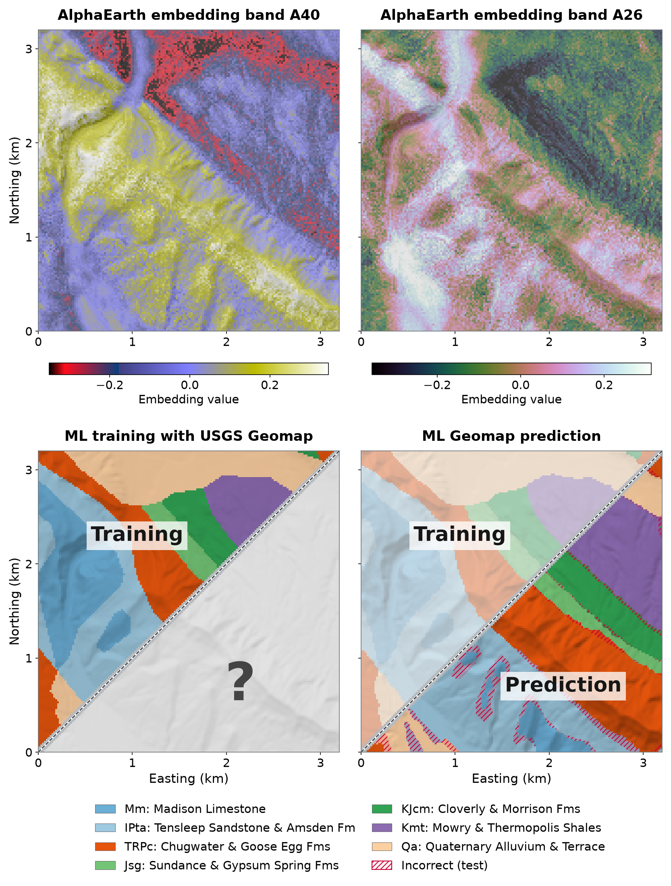
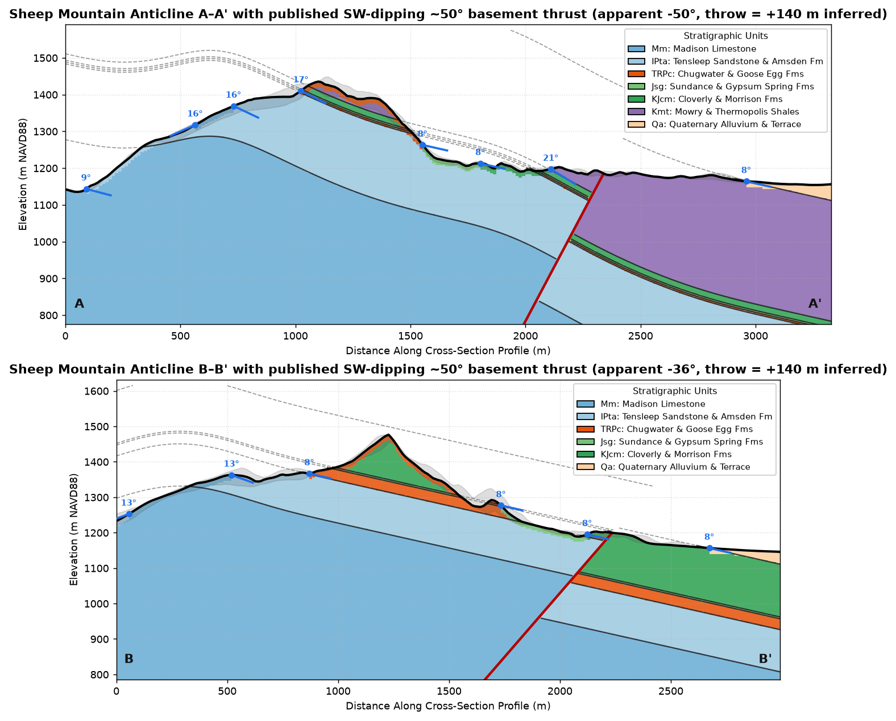
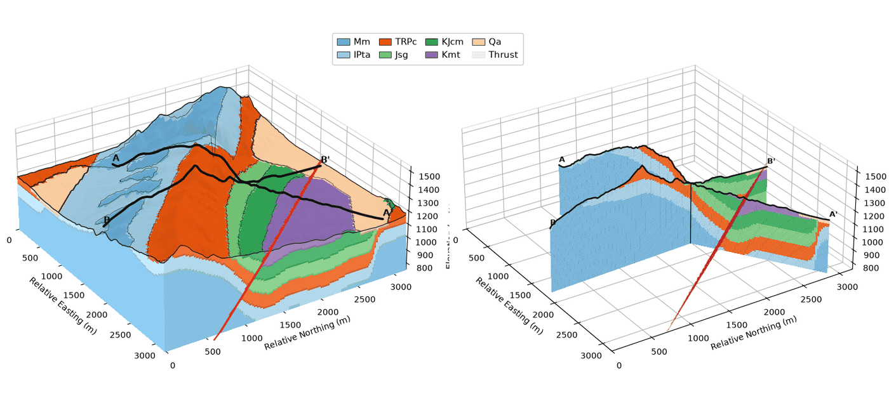
Surface change
Toolkits detect surface change at different temporal and spatial scales using elevation, optical, radar, and velocity data. Five notebooks walk through the methods with public data.
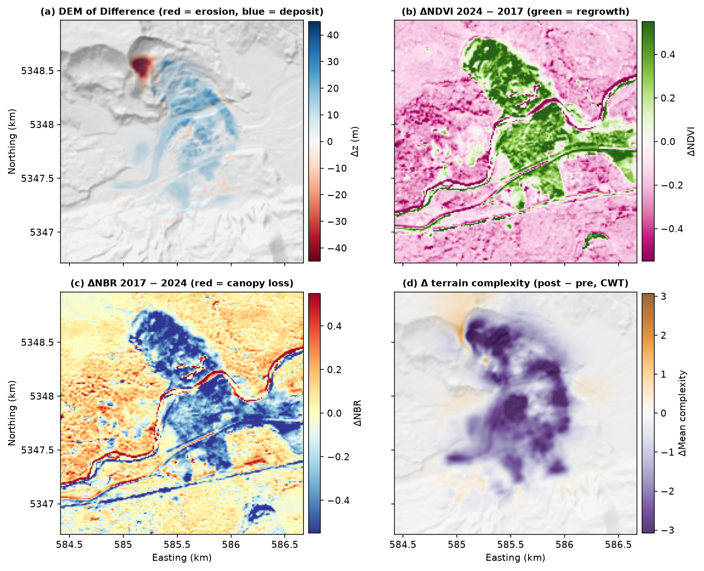
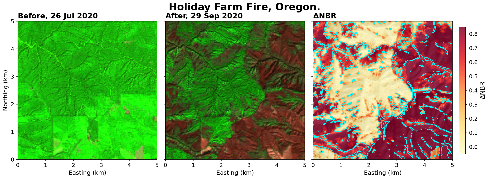
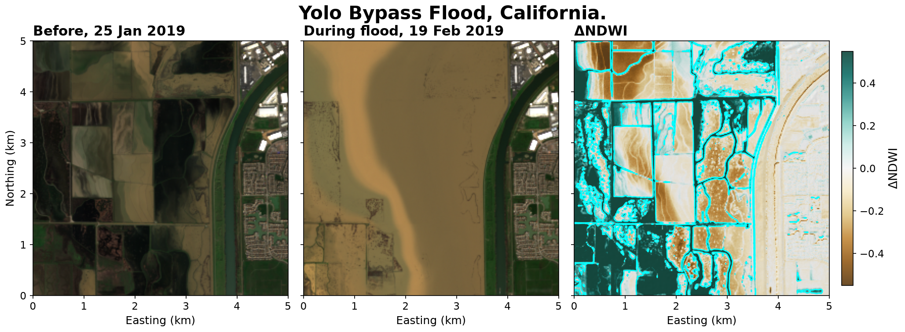
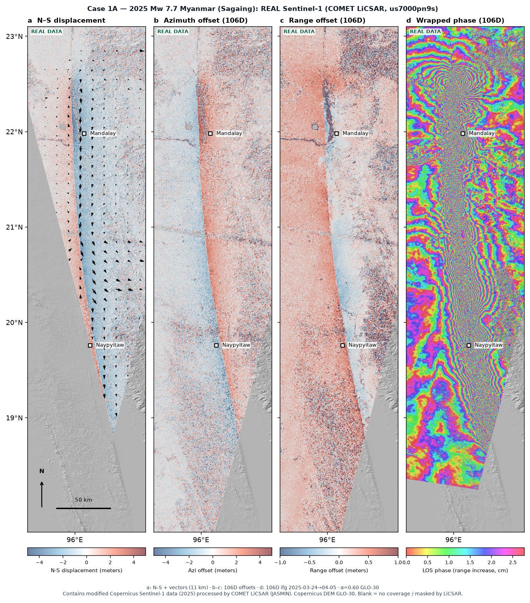
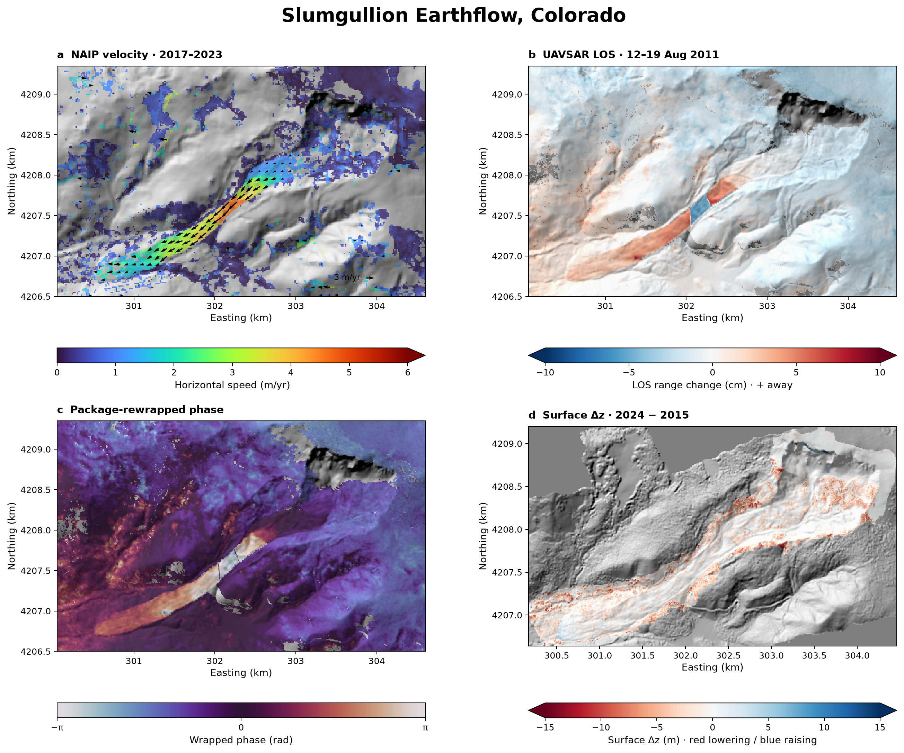
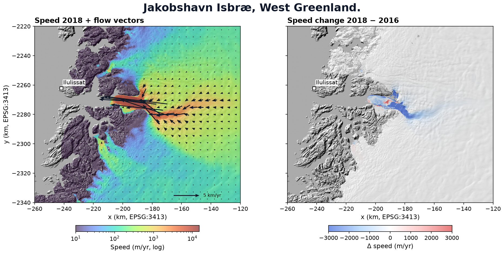
Key features
Surface change
DEM of Difference, spectral-index change, InSAR, and optical feature tracking for surface-change analysis.
Spectral and terrain
Spectral indices and multiscale terrain metrics.
Geological mapping
Auto-mapping of geologic units, scored on held-out blocks.
Sections and 3D
Cross-sections, 3D block/fence diagrams and an offline WebGL viewer.
Installation
pip install pygeomapperRequires Python 3.10 or newer. One standard installation includes the mapping, machine-learning, and 3D-viewing dependencies; no extras are needed.
Citation
Lai, L.S.-H. (2026) pyGeoMapper (version 0.3.0). Zenodo, https://doi.org/10.5281/zenodo.23832020
pyGeoMapper is under the GNU Affero General Public License 3.0 or later.
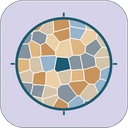
pyPetrograph ML-applied toolkits for rock thin-section petrographic analysis.